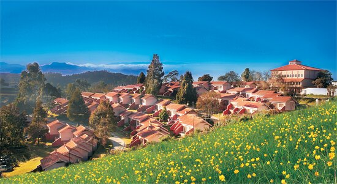

Travelling with us
Travel behavior is about life. In our life, we progress through life course stages from birth to K-12 and later education, developing skills in socializing with friends and family, training for jobs and careers, looking for jobs and suitable places to live and work, engaging in long term relationships, having children and raising them, retiring, and whatever else happens post-retirement. We develop life long and shorter projects that define our life in terms of years, months, weeks, and days. In all this, we allocate time and other resources to activities and interactions with other people that evolve over time and space. You can also enjoy the beauty of nature when you travel. Similarly, you get to explore nature like never before and find discover the earth’s beauty. Travelling also helps us understand people.After you spend time at a new place, you interact with the local people of the place. You learn so much about them and their culture. It makes you more open-minded and be mindful of the culture and beliefs of different people.
ARAKU

Araku is located in the Eastern Ghats about 114 kilometres (71 mi) from Visakhapatnam, close to the Odisha state border. The Anantagiri and Sunkarimetta Reserved Forest, which are part of Araku Valley, are rich in biodiversity and are mined for bauxite. Galikonda hill rising to a height of 5,000 feet (1,500 m) is amongst the highest peaks in Andhra Pradesh. The average rainfall is 1,700 millimetres (67 in), the bulk of which is received during June–October.The altitude is about 1300 m above the sea level. The valley spreads around 36 km.
OOTY
Ooty is located in the Nilgiri hills, which are part of the Western Ghats in the Nilgiri Biosphere Reserve. It is separated from the neighboring state of Karnataka by the Moyar river in the north and from the Anaimalai and Palani hills in the south by the Palghat Gap. It is situated at an altitude of 2,240 metres (7,350 feet) above sea level. The total area of the town is 30.36 km2 (11.72 sq mi). Doddabetta is the highest peak (2,623 m or 8,606 ft) in the Nilgiris, about 10 km (6.2 mi) from Ooty.
Learn More About OOTY